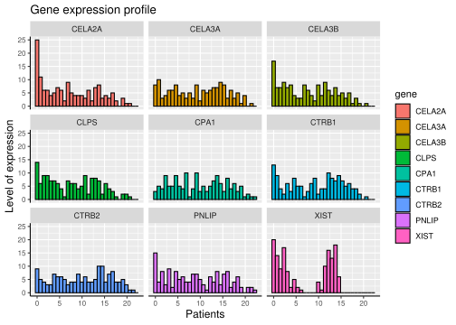
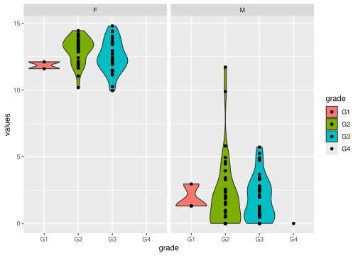
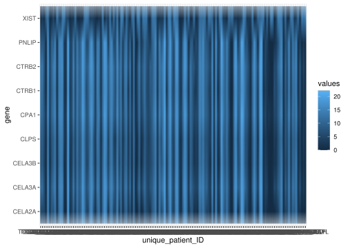

We provide you with an Excel file that contains gene expression data for the nine most highly variable genes in a pancreas cancer gene expression dataset (https://portal.gdc.cancer.gov/projects/TCGA-PAAD), as well as metadata for the individual samples and genes.
Import the gene expression matrix from the Excel file into the R session as a tibble. Assign it to an object named exprs_assay.
exprs_assay <-read_excel(path ="/project/shared/r/1_r_data_science/7-tidyverse-workflow/EH2011.xlsx", sheet ="exprs")#NOTE-click on the enliseted table to see the table in a new tab#NOTE=path can have only quoted file name if it is in the directory with you#NOTE-excel_sheets helps you know what are the sheets in it, you an also open it after copying it #and opening it.# wrong exprs_assay <- read_excel(excel_sheets("/project/shared/r/1_r_data_science/7-tidyverse-wor#kflow/EH2011.xlsx"))# wrong exprs_assay<- readxl_example("/project/shared/r/1_r_data_science/7-tidyverse-workflow/EH20#11.xlsx")
Reshape the gene expression matrix in a tidy format. Assign it to a new object exprs_assay_long.
#names_to= "patient_id", values_to="expression", pipe in rename(gene_name=gene) because we pivoted #by !gene, cannot change it so pipe its name change#pivot_longer(!gene)--everything except gene which is non-numeric, you want only numeric data
Draw a histogram of gene expression levels for each gene in a separate facet.
`stat_bin()` using `bins = 30`. Pick better value with `binwidth`.

#NOTE-when you fill with gene, species etc that is non-standard, you need to add it in aes, things #like colour are standard so do not need to be put under aes("")#x=expression, can be written too#facet_wrap(vars(gene=gene_name), labeller=label_both or label_context)#vars is best practice#facet_wrap (~gene_name) or ("gene-name")
Exercise
Part 2
Import the sample metadata from the Excel file into the R session as a tibble. Assign it to an object named sample_info.
# A tibble: 146 × 11
unique_patient_ID age sex grade T N M days_to_death
<chr> <dbl> <chr> <chr> <chr> <chr> <chr> <dbl>
1 TCGA_2J_AAB1 65 M G2 T3 N1 M0 66
2 TCGA_2J_AAB4 48 M G2 T2 N1 M0 729
3 TCGA_2J_AAB6 75 M G3 T3 N0 M0 293
4 TCGA_2J_AAB8 71 M G2 T3 N1 M0 80
5 TCGA_2J_AAB9 70 F G2 T3 N1 M0 627
6 TCGA_2J_AABA 55 M G2 T3 N1 M0 607
7 TCGA_2J_AABE 73 M G2 T3 N0 M0 676
8 TCGA_2J_AABF 73 M G3 T3 N1 M0 691
9 TCGA_2J_AABH 61 M G2 T3 N0 M0 1287
10 TCGA_2J_AABI 55 F G3 T3 N0 M0 969
# ℹ 136 more rows
# ℹ 3 more variables: vital_status <chr>, sample_type <chr>, sample_name <chr>
grade: how abnormal the cancer cells and tissue look under a microscope
T: size of the tumor and any spread of cancer into nearby tissue
N: spread of cancer to nearby lymph nodes
M: metastasis (spread of cancer to other parts of the body)
Convert the four columns above to the factor type.
# wrong sample_info <- sample_info %>% # wrong- factor ( c("grade", "T","N","M"))#you can also write mutate for each factor or consolidate as belowsample_info <- sample_info %>%mutate(grade =factor(grade),T =factor(T),N =factor(N),M =factor(M) )sample_info
# A tibble: 146 × 11
unique_patient_ID age sex grade T N M days_to_death
<chr> <dbl> <chr> <fct> <fct> <fct> <fct> <dbl>
1 TCGA_2J_AAB1 65 M G2 T3 N1 M0 66
2 TCGA_2J_AAB4 48 M G2 T2 N1 M0 729
3 TCGA_2J_AAB6 75 M G3 T3 N0 M0 293
4 TCGA_2J_AAB8 71 M G2 T3 N1 M0 80
5 TCGA_2J_AAB9 70 F G2 T3 N1 M0 627
6 TCGA_2J_AABA 55 M G2 T3 N1 M0 607
7 TCGA_2J_AABE 73 M G2 T3 N0 M0 676
8 TCGA_2J_AABF 73 M G3 T3 N1 M0 691
9 TCGA_2J_AABH 61 M G2 T3 N0 M0 1287
10 TCGA_2J_AABI 55 F G3 T3 N0 M0 969
# ℹ 136 more rows
# ℹ 3 more variables: vital_status <chr>, sample_type <chr>, sample_name <chr>
#you can also do sample_info <- sample_info %>% mutate(across(.cols=c(grade, T, N, M), .fns=factor))#note-here the columns mentioned above are changed into factor type. grade, T, N, M are features with different levels as indicated by the #column values#even though you specify 7 types of levels, if it doesnt find the 7th one in the data, it will still work
Combine sample information with gene expression data. Assign the output to exprs_sampleinfo.
# A tibble: 1,314 × 13
unique_patient_ID age sex grade T N M days_to_death
<chr> <dbl> <chr> <fct> <fct> <fct> <fct> <dbl>
1 TCGA_2J_AAB1 65 M G2 T3 N1 M0 66
2 TCGA_2J_AAB1 65 M G2 T3 N1 M0 66
3 TCGA_2J_AAB1 65 M G2 T3 N1 M0 66
4 TCGA_2J_AAB1 65 M G2 T3 N1 M0 66
5 TCGA_2J_AAB1 65 M G2 T3 N1 M0 66
6 TCGA_2J_AAB1 65 M G2 T3 N1 M0 66
7 TCGA_2J_AAB1 65 M G2 T3 N1 M0 66
8 TCGA_2J_AAB1 65 M G2 T3 N1 M0 66
9 TCGA_2J_AAB1 65 M G2 T3 N1 M0 66
10 TCGA_2J_AAB4 48 M G2 T2 N1 M0 729
# ℹ 1,304 more rows
# ℹ 5 more variables: vital_status <chr>, sample_type <chr>, sample_name <chr>,
# gene <chr>, values <dbl>
# wrong increases the column so much--exprs_sampleinfo <- sample_info %>% cross_join(exprs_assay_long)#you can also do --by =c("unique_patient_ID"="name"), but join_by is preferred#
Exercise
Part 3
Identify the gene with the largest absolute difference in expression between male and female patients.
# A tibble: 1 × 4
gene F M Difference
<chr> <dbl> <dbl> <dbl>
1 XIST 12.7 1.96 10.8
#you can do the above in a shorter code ignoring group and summarise command#exprs_sampleinfo %>% select(sex, gene, values) %>% pivot_wider(names_from = sex, values_from = #expression, values_fn=mean) %>% mutate(Difference = F - M) %>% slice_max(abs(Difference))#without the last slice command you can see all the 9 genes displayed#message fro summarise gruopued by sex ignored by .groups=drop#pivot_wider(names_from = sex, values_from = mean_value)#expression is values in select, group_by gene_name#Difference label as FminusM
Visualise the expression of that gene across tumour grades. Facet by sex. Color by T score.
# A tibble: 146 × 13
unique_patient_ID age sex grade T N M days_to_death
<chr> <dbl> <chr> <fct> <fct> <fct> <fct> <dbl>
1 TCGA_2J_AAB1 65 M G2 T3 N1 M0 66
2 TCGA_2J_AAB4 48 M G2 T2 N1 M0 729
3 TCGA_2J_AAB6 75 M G3 T3 N0 M0 293
4 TCGA_2J_AAB8 71 M G2 T3 N1 M0 80
5 TCGA_2J_AAB9 70 F G2 T3 N1 M0 627
6 TCGA_2J_AABA 55 M G2 T3 N1 M0 607
7 TCGA_2J_AABE 73 M G2 T3 N0 M0 676
8 TCGA_2J_AABF 73 M G3 T3 N1 M0 691
9 TCGA_2J_AABH 61 M G2 T3 N0 M0 1287
10 TCGA_2J_AABI 55 F G3 T3 N0 M0 969
# ℹ 136 more rows
# ℹ 5 more variables: vital_status <chr>, sample_type <chr>, sample_name <chr>,
# gene <chr>, values <dbl>
Warning: Groups with fewer than two datapoints have been dropped.
ℹ Set `drop = FALSE` to consider such groups for position adjustment purposes.

#need to plot a box plot or violin plot or histogram
Draw a heat map of all nine genes. Remove labels as well as ticks for the x-axis. Remove the panel grid and background.
ggplot(exprs_sampleinfo, aes(x=unique_patient_ID, y=gene, fill =values)) +geom_raster()

#panel.background=element_blank(),#in facet_wrap= ("sex",scales="free_x") #add theme here
Repeat the heat map, grouping samples by sex.
# Copy the code chunk above and tweak the aes(...) contents.ggplot(exprs_sampleinfo, aes(x=unique_patient_ID, y=gene, fill =values, )) +geom_raster()+facet_wrap(~sex, nrow=2)+scale_fill_gradient(low ="green", high ="red")